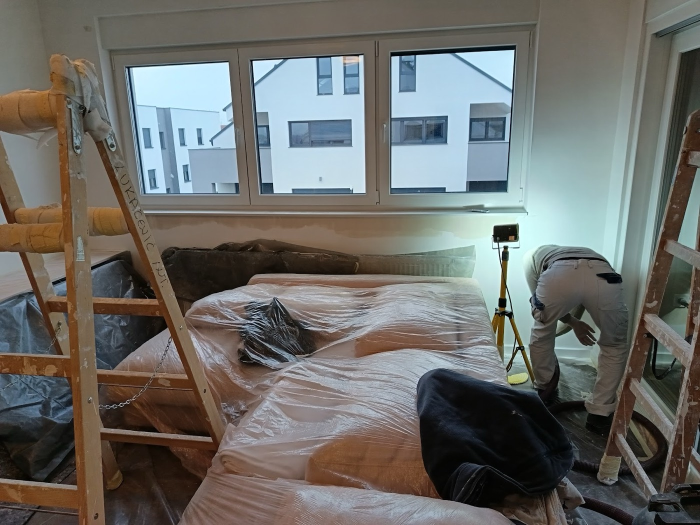
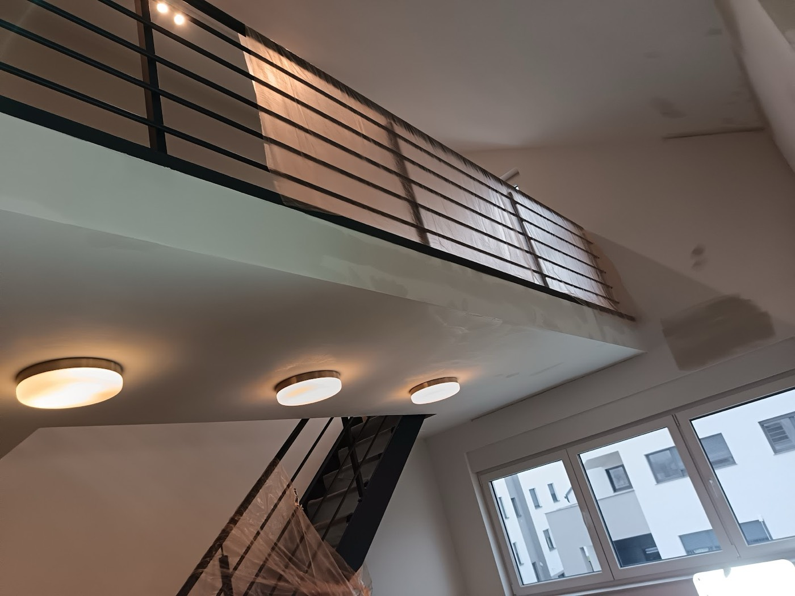

Naslovnica / Usluge i radovi
Soboslikarski posao radimo redom: zaštita, sanacija, gletanje, bojanje. Ispod je svaki korak opisan uz fotografije s naših gradilišta u Velikoj Gorici i okolici.

Prije boje ide folija
Prije prvog poteza pokrivamo sve što ostaje u prostoru: namještaj, podove, prozore i vrata. Rubove, okvire i razvodne ormariće lijepimo trakom.
- Folija preko namještaja i podova
- Traka na okvirima, prozorima i rubovima
- Zaštita ograda i stubišta u visokim prostorima

Do zdrave podloge
Kad se stara boja ljušti ili žbuka puca, nema smisla bojati preko. Oštećene slojeve skidamo, a pukotine i rupe popunjavamo.
- Skidanje ljuskave boje i oštećenih slojeva
- Popravak pukotina i oštećenja na zidovima i stropovima
- Stari stropovi i zidovi u starijim stanovima

Ravno, i na kosinama
Gletanjem izravnavamo zidove, stropove i kosine, uključujući spojeve i popravljena mjesta, da boja na kraju legne jednolično.
- Zidovi i stropovi u sobama i stanovima
- Kosine i uglovi u potkrovljima
- Spojevi i popravljena mjesta

Završni sloj
Tek na pripremljenu podlogu nanosimo boju, u običnim sobama jednako kao na visokim stropovima ispod galerija i iznad stubišta.
- Bojanje zidova i stropova
- Galerije, stubišta i visoki prostori
- Prostori s krovnim prozorima
S terena, bez uljepšavanja.
Fotografije koje je tvrtka objavila na svom Google profilu: radovi u tijeku i gotovi prostori. Kliknite za povećanje.
Imate prostor za bojanje?
Nazovite ili pošaljite upit s mjestom, vrstom radova i okvirnom kvadraturom.